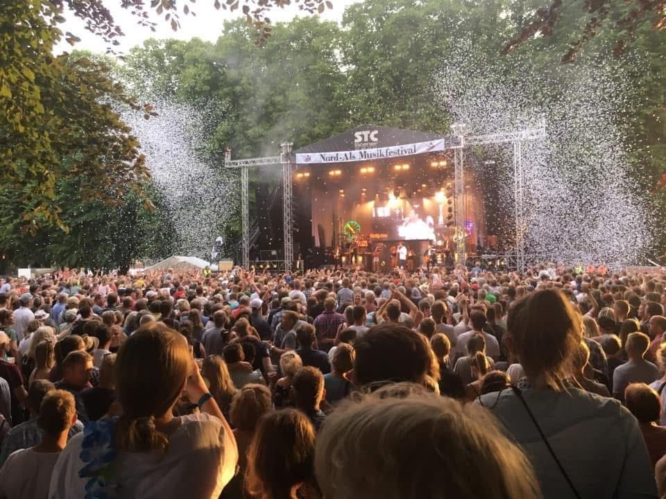
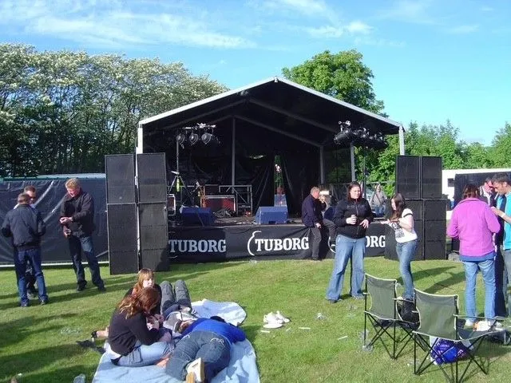
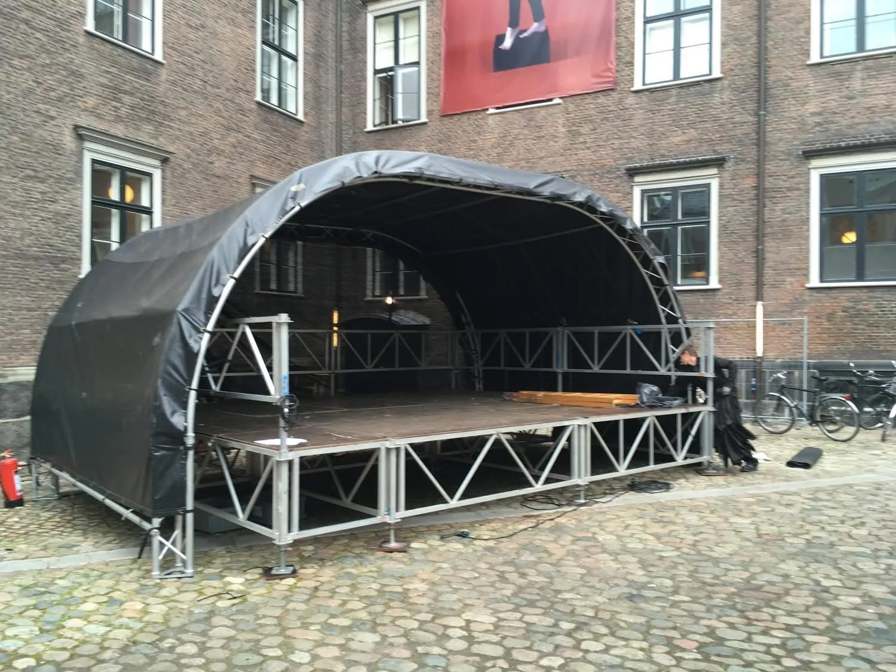
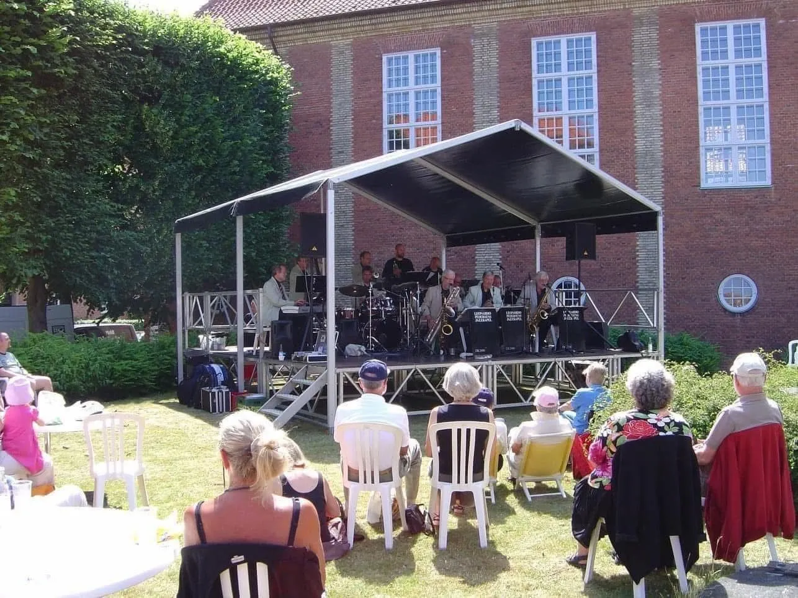

Til markeder, gader & torve
STC har også små scener med i udlejnings-programmet — fleksible og særligt egnede til steder hvor mobilscener ikke kan bruges.
STC har også små scener med i udlejnings-programmet. Scenerne er også her fleksible og særligt egnede til:
— hvor mobilscener ikke kan bruges. Kort sagt scener til mellem og små events. Alle scener er med scenegulv.
Alle priser på scener er ekskl. moms. Alle vores scener leveres med nye brandgodkendte presenninger. Nedenstående 3 nævnte eksempler er standardmål. Skulle I imidlertid være interesseret i andre størrelser og/eller udformninger, vil det med vores udstyr være muligt at sammensætte specielle scener. Ring og hør nærmere.
Vi er behjælpelige med anskaffelse af andet tilbehør: gorillahegn, mobile toiletter og generatorer mv. Hvis det ønskes kan vi også give tilbud på scene, lys og lyd som totalproduktion.
Ring og hør nærmere 40 63 42 24. Der gives rabat på alle vore produkter, hvor udlejning finder sted over flere dage. Prøv STC næste gang — det betaler sig.



Læs om vores
Scenen bliver håndbygget, så den er god hvor det er svært at komme til.
En god scene hvor det vigtigste er, at stå og spille, uden det store behov for tungt teknisk udstyr.
Scenegulvet kan justeres i højden fra 70 cm til 1,5 m.
Arrangøren skal udover det aftalte beløb stille 4 frivillige medhjælpere til rådighed, ved opsætning og nedtagning.
En lille, hurtig og handy scene når der skal være "fest i gaden".
Scenegulvet kan også her justeres i højden 70 cm til 1,5 m.
Arrangøren skal udover det aftalte beløb stille 4 frivillige medhjælpere til rådighed, ved opsætning og nedtagning. Pris pr. døgn fra: kr. 7.500,– 6 × 3 m.
Dette er den mindste scene vi laver i vores standardtilbud. Den er velegnet til solist, børneunderholdning, m.v. Scenegulvet kan justeres fra 70 cm til 1,5 m. Pris pr. døgn fra: kr. 6.600,–
Dette er et eksempel på udendørs scenegulv, men scenegulvet specialbygges til netop dit arrangement.
Vi er leveringsdygtige i catwalk til alle former for events.
Ring for at høre hvad vi kan tilbyde til netop din event/modeshow.
Gulvtæpper i forskellige farver mod merpris lægges på.
Ring direkte til Morten Lind — eller send os en besked, så vender vi hurtigt tilbage.